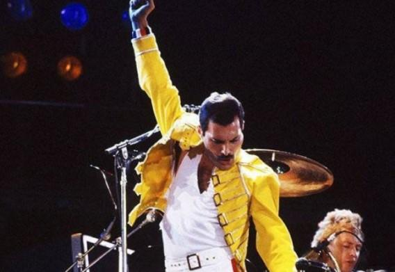

Freddie Mercury performs on stage at Wembley Stadium
There is a timeline of Freddie Mercury's life
1946 - Born in Pedra Zanzibar Farrokh Bulsara
1954 - Was sent to study at St. Peter Boarding School
1958 - He formed a band called The Hectics, at that time he started to be called Freddie by his friends
1963 - Mudou-se para a capital inglesa, Londres
1969 - Started the band Ibex, later named Wreckage
1970 - Joined guitarist Brian May and drummer Roger Taylor in the trio Smile, whose name was changed to Queen
1971 - Started a relationship with clothing saleswoman Mary Austin
1985 - Started another serious romance with hairdresser Jim Hutton, with whom Freddie lived for the rest of his life
1986 - British press began reporting that Mercury had been diagnosed as having the AIDS virus
1991 - Freddie died a victim of bronchopneumonia caused by AIDS
I'm a shooting star leaping through the sky
Like a tiger defying the laws of gravity
I'm a racing car passing by like Lady Godiva
I'm gonna go go go
There's no stopping me
Don't Stop Me Now - Queen, 1979